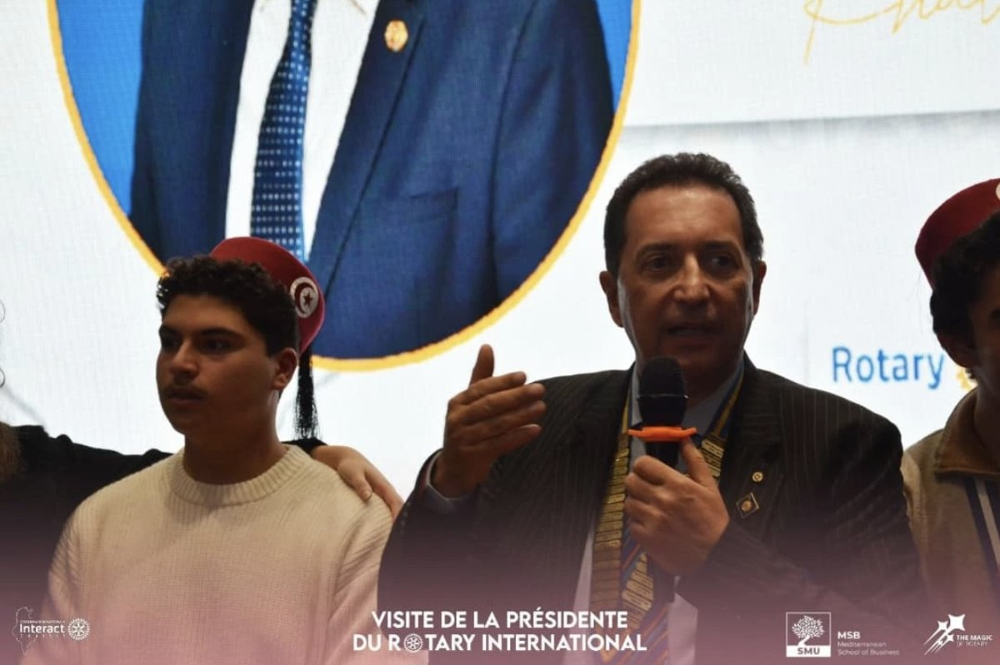
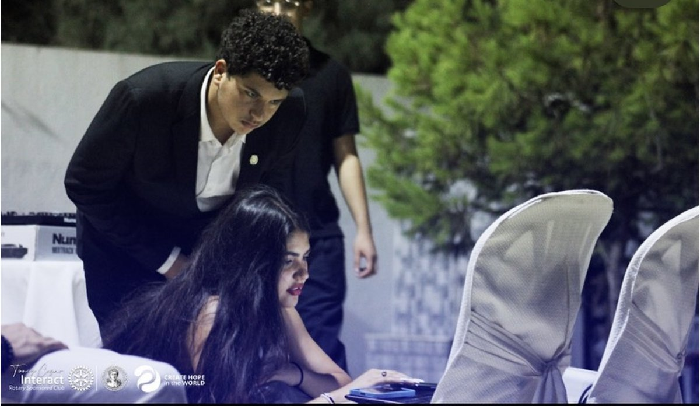
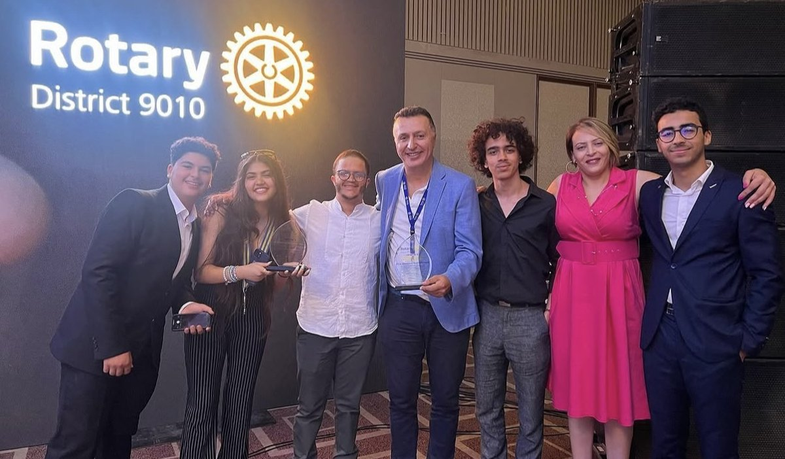
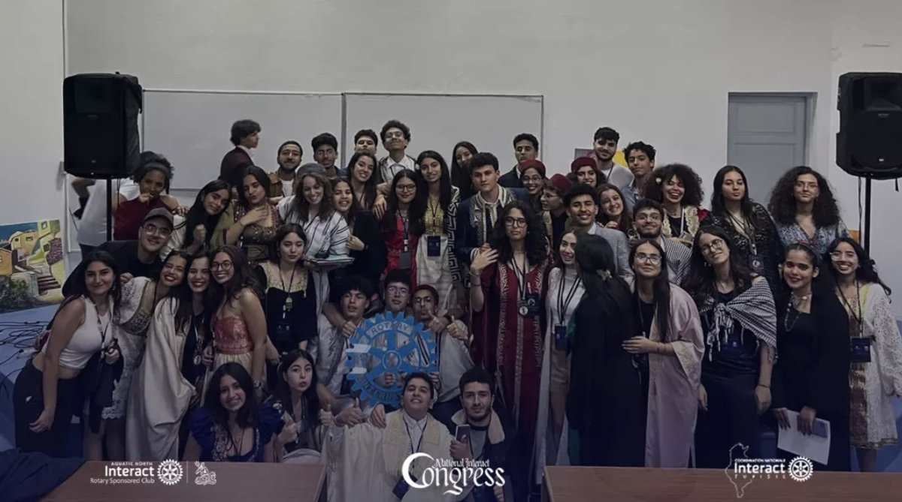

Six années d’engagement, de partage et de leadership au sein de l’Interact Club Tunis César.

Organisation de séminaires réunissant plus de 300 jeunes autour du leadership, de la communication et du développement personnel.

Six années marquées par l’esprit d’équipe, l’amitié et l’engagement au service des autres.

Actions humanitaires, collectes et initiatives solidaires.

Candidature défendue devant les représentants de plus de 60 clubs et près de 90 % des voix, devant environ 400 personnes.